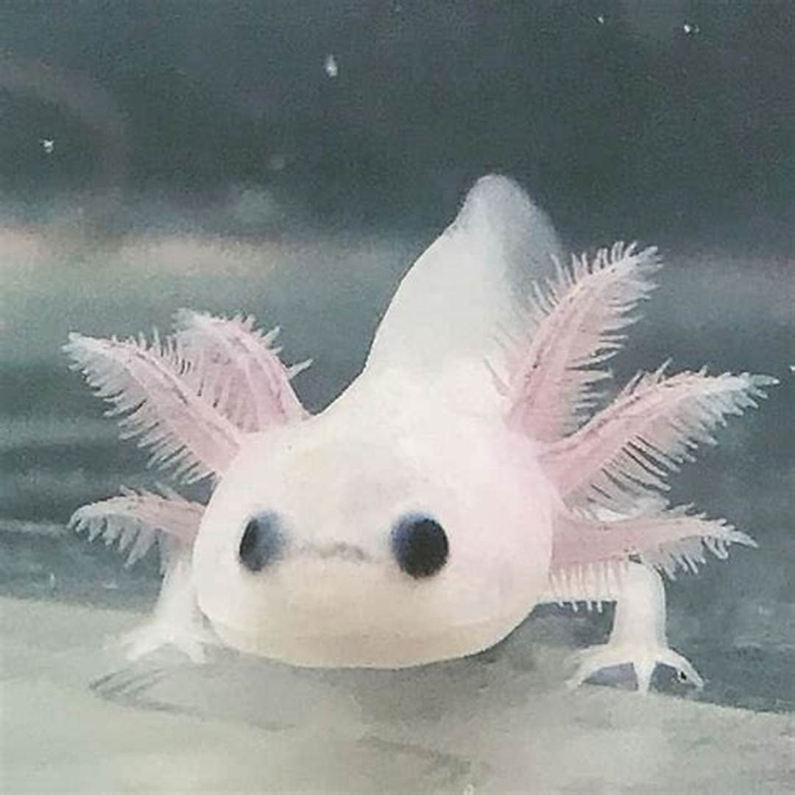
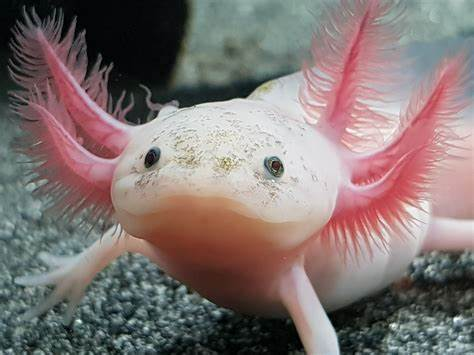

 Axolote é um nome asteca, que numa tradução aproximada significa "monstro aquático", e na mitologia asteca era a evocação do deus Xolotl. O axolote (do náuatle axolotl) (Ambystoma mexicanum) é uma espécie de salamandra que não se desenvolve na fase de larva, permanecendo nesse estado mesmo em adultos. É um exemplo de animal neoténico, pois conserva durante toda a vida brânquias externas, uma característica do estado larval. Os axolotes são muito usados em laboratório devido à sua capacidade de regeneração. Ao contrário do que ocorre com seus parentes próximos, como sapos e rãs, que passam a viver na terra quando deixam as formas larvais, os axolotes permanecem na água por toda a vida. O seu único habitat natural consiste dos lagos próximos da Cidade do México, em especial o lago Xochimilco e o lago Chignahuapan, este último no estado de Puebla. Atualmente, no lago Chignahuapan, são raramente encontrados. Isto se deve à predação dos seus ovos por espécies não autóctones introduzidas pelo homem. Além disso, a capacidade de regeneração do axolote também traz alguns problemas, uma vez que em certas zonas do México é apreciado em caldos e pela medicina naturista (como vitamínico).

Axolotes: Como Eles Conquistarão o Mundo?
Axolotes Podem Viver Muito e Se Regenerar Muito Facilmente, São Deadpools da Vida Real!!!
 Um axolote adulto pode medir de 15 a 45 cm embora o comprimento mais comum seja 23 cm e seja raro encontrar um espécime com mais de 30 cm. Os axolotes possuem características típicas do estado larval das salamandras, incluindo brânquias externas e barbatanas caudais desde o final da cabeça prolongando-se por toda a extensão da cauda. Isso ocorre porque esses anfíbios apresentam tireoide rudimentar e não há liberação de hormônios tireoideanos, essenciais na metamorfose de anfíbios. Quando um axolote recebe hormônio tireoideano, transforma-se em animal adulto com caracteristícas terrestres: pulmão e patas e perda da cauda por reabsorção, tornando-se muito similar à salamandra-tigre Ambystoma velasci (em muitos casos, essa metamorfose ocorre naturalmente). As cabeças são amplas e possuem olhos sem pálpebras. Os machos são identificáveis apenas na época de reprodução pela presença de cloacas muito mais pronunciadas e de aspecto redondo. O genoma do axolote é o maior já sequenciado, possuindo cerca de 32 bilhões de pares de bases, 10 vezes maior que o genoma humano!